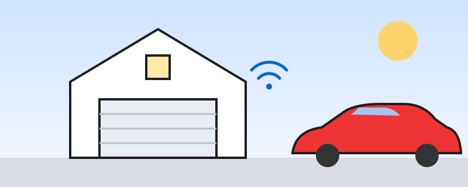

Make your Tesla and your Apple home work together
A practical guide for Model Y and Model 3 owners who live in the Apple ecosystem: iPhone, Apple Watch, HomePod and the Home app.
Tesla automations
Eight tested ideas using the Tesla app, Siri, Apple Shortcuts and Home app automations: open the garage, precondition the cabin, and more.
HomeKit & Matter gear
A short directory of currently sold devices by category, each marked HomeKit, Matter or both, with links to official product pages.
Start here
- Set up a home hub (HomePod or Apple TV) so automations run when you're away.
- Update the Tesla app on your iPhone to get its Siri/Shortcuts actions.
- Pick one automation and build from there.